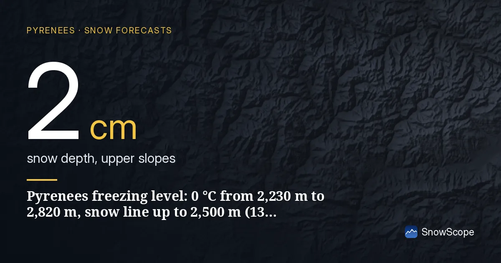
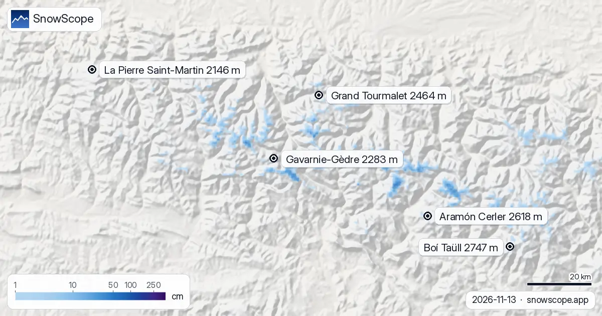
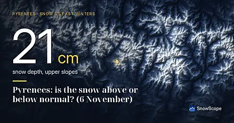

Pyrenees freezing level: 0 °C from 2,230 m to 2,820 m, snow line up to 2,500 m (13 November)
In the Pyrenees, the height where air temperature crosses 0 °C is the border between snow and rain. Over the next days this freezing level moves between 2,230 m and 2,820 m across the range, putting the snow line about 300 m below that level during the warmest hours of the day. The existing snow cover looks safe from rain damage in the coming spell.
See the live snow forecast for Boí Taüll in the SnowScope appSnow depth, powder alerts and the 3D map, free.
Where precipitation falls as snow
On Friday 13 November the snow line sits around 2,300 to 2,500 m across the resorts, depending on the peak hours when air warms most. This means high summits stay cold enough for snow, while mid-mountain and lower slopes receive rain or wet snow that runs off quickly.
By Sunday 15 November the freezing level drops to 2,230 m at its lowest, so the snow line falls too. This colder pattern means more of the precipitation will stick as snow higher up. At Gavarnie-Gèdre, where the top stands at 2,283 m, the snow line dips below the peak on Sunday, allowing more of the mountain to hold snow.
| Resort | Snow depth | New snow, 72 h | Coming, next days | Top |
|---|---|---|---|---|
| Boí Taüll | 2 cm | 6 cm | 8 cm | 2,747 m |
| Aramón Cerler | 1 cm | 6 cm | 10 cm | 2,618 m |
| Grand Tourmalet | 2 cm | 6 cm | 11 cm | 2,464 m |
| Gavarnie-Gèdre | 0 cm | 3 cm | 17 cm | 2,283 m |
| La Pierre Saint-Martin | 0 cm | 3 cm | 7 cm | 2,146 m |

Rain on existing snow: the risk check
Rain falling on old snow can make it heavy and unstable. The danger is lowest here because on the days with rain ahead, the snow line stays well above the existing snowpack at every resort. At Baqueira-Beret and Saint-Lary, 14 mm and 25 mm of water will fall over the next days, but the snow line during those wet hours sits at 2,540 m and 2,560 m respectively, leaving the thin snow cover dry.
Boí Taüll has 2 cm on its upper slopes at 2,747 m; the snow line on Friday stays near 2,500 m, so the summit stays in the snow zone. Aramón Cerler's 1 cm at 2,618 m is likewise protected, with the snow line around 2,500 m on Friday. The story is the same across the range: existing snow sits above the line where rain turns to snow.

How the freezing level changes day by day
Friday 13 November: 0 °C level ranges from 2,470 m (coldest hour) to 2,820 m (warmest). Saturday 14 November: from 2,400 m to 2,750 m; still warm but falling. Sunday 15 November: from 2,230 m to 2,720 m; a marked drop at night. Monday 16 November: from 2,270 m to 2,640 m; the colder air settles in.
The drop on Sunday is the key shift. When the freezing level falls 200 m or more in a day, more of each mountain lies in the snow zone. At lower resorts like Gavarnie-Gèdre and La Pierre Saint-Martin, this Sunday dip means the snow line finally falls below the summits, so the whole mountains can receive snow rather than rain.
What the snow line means in practice
The snow line is roughly where falling flakes start to melt. It sits about 300 m below the 0 °C level because melting snow needs time and heat energy. In dry air, evaporation cools the flakes further and can push the line lower still.
On Friday at Boí Taüll, the snow line near 2,500 m means: above 2,500 m, any precipitation arrives as snow; below 2,500 m, it falls as rain or wet snow on the lower slopes. The upper runs at 2,747 m store fresh snow; the base at 2,039 m gets rain that drains away. This split between snow and rain across a single resort is normal in early November.
What 14 mm and 25 mm of water mean
Baqueira-Beret will see 14 mm of precipitation in the next few days; Saint-Lary will see 25 mm. These are small amounts by winter standards. At Baqueira, 42 percent of that water falls as snow at the summit elevation of 2,510 m; at Saint-Lary, 46 percent. The rest falls as rain lower down and runs off into the valley.
These small totals reflect the early season. Snow depths remain thin (1 to 3 cm on upper slopes) and new snow will add only 8 to 11 cm by Monday. Much more precipitation is due later in the week: Saint-Lary will see 10 mm on Wednesday 17 November. By then the freezing level may be even lower, so that heavier rain-free spell could build the snowpack more effectively.
Tips for skiers
- Check which runs at your resort sit above the snow line each day. Upper slopes stay dry and skiable longer when rain falls on lower runs.
- Sunday 15 November marks a shift to colder air; plan to ski higher terrain on Friday and Saturday while the freezing level is warmest.
- Early-season snow is thin and may hide rocks. Stay on groomed terrain until depths build further later in the month.
- The freezing level forecast can shift by several hundred metres. Check the map again the day before you travel.
- Before any off-piste or touring, read the official avalanche bulletin for your area.
About these numbers
Resort snow depths are the deepest snow on the resort's upper slopes on the date shown; they are estimates for an area, not a measurement at one point. Forecasts can change. Always read the official avalanche bulletin before going off-piste.
Official avalanche bulletins: Météo-France / Meteocat / AEMET
Cite this report
For research, teaching or the press: the numbers and charts are free to reuse under CC BY 4.0 with this citation.
SnowScope (2026), Pyrenees freezing level: 0 °C from 2,230 m to 2,820 m, snow line up to 2,500 m (13 November), https://snowscope.app/blog/en/2026/11/pyrenees-freezing-level-snow-line-13-november-2026.html, accessed 2026-11-13
SnowScope (Atlas Labs). (2026, November 13). Pyrenees freezing level: 0 °C from 2,230 m to 2,820 m, snow line up to 2,500 m (13 November). SnowScope snow reports. https://snowscope.app/blog/en/2026/11/pyrenees-freezing-level-snow-line-13-november-2026.html
BibTeX
@misc{snowscope2026pyreneesfreezinglevelsno,
author = {{SnowScope (Atlas Labs)}},
title = {Pyrenees freezing level: 0 °C from 2,230 m to 2,820 m, snow line up to 2,500 m (13 November)},
year = {2026},
month = nov,
howpublished = {\url{https://snowscope.app/blog/en/2026/11/pyrenees-freezing-level-snow-line-13-november-2026.html}},
note = {Published 2026-11-13 12:19 UTC; accessed 2026-11-13}
}· CC BY 4.0 · Methods, data and tools →
Boí Taüll: snow and temperature by height, this winter vs last (tools) →
Follow Boí Taüll
Free: a message when fresh snow is coming, and the forecast every morning.
More snow reports

Thin snow under 10 cm across the Pyrenees on 11 November. Pack sharp edges, waterproof shell, helmet. Best snow on highest north-facing runs.

Pyrenees two-week snow forecast: Gavarnie-Gèdre heads 6 resorts with 36 cm of new snow by 26 November. Data 12 November.

On 6 November, one Pyrenees resort has snow well above normal for the date. SnowScope compared four resorts with the past 46 winters.